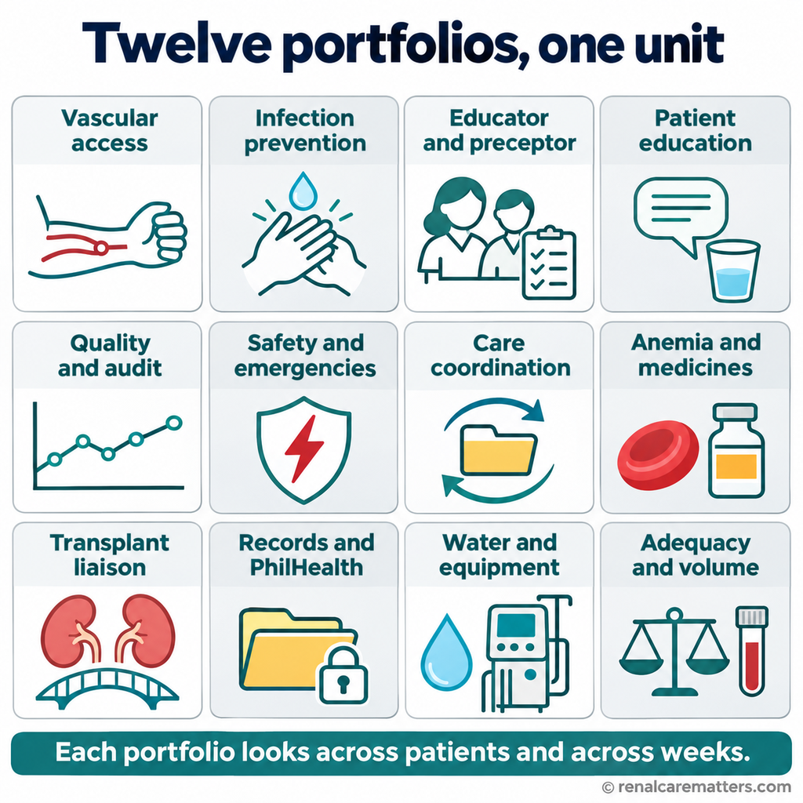
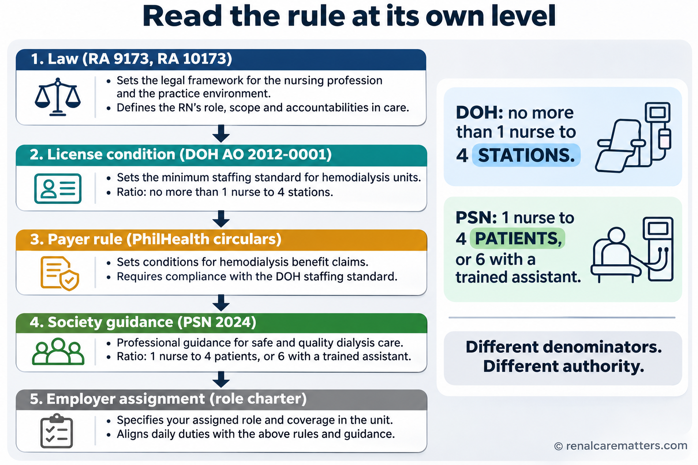
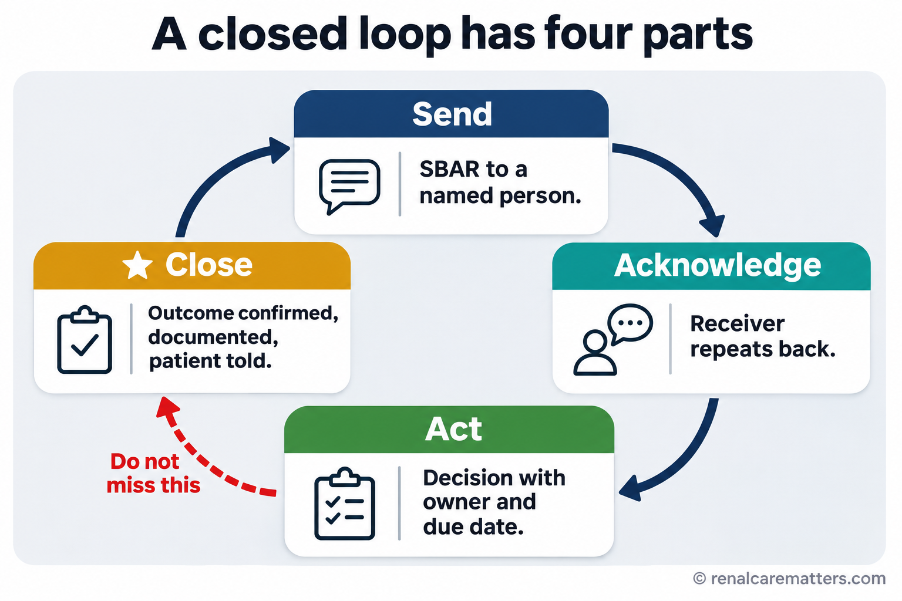

After this module you should be able to
- Distinguish law, license conditions, payer rules, professional-society guidance and employer assignments, and apply each at its own level of authority.
- Write a role charter that states purpose, scope, protected time, escalation, backup, limits and review date.
- Use closed-loop communication with Situation, Background, Assessment, Recommendation (SBAR) and protect confidential information in every handoff.
- Build a baseline portfolio of observed competence and outcome measures instead of relying on certificates.
Time plan. 2 h study · 1 h workshop · 1 h supervised practice. The supervised hours are arranged by your unit and recorded in its own competency system; this page records self-study only.
A lane on a busy road
Picture a hemodialysis unit as a busy road. Every nurse drives a car: a group of patients, a shift, a set of machines. A special role is a lane painted on that road. The vascular access lane, the infection prevention lane, the education lane. The lane tells you where you are expected to watch, what you carry, and where you must not drift. It does not give you a faster car, and it does not let you drive in the surgeon's lane or the engineer's lane.
The picture has a limit. On a real road the lanes are painted and everyone can see them. In a dialysis unit the lanes are usually invisible. A nurse is told "you handle access now" in a corridor. Nobody writes down what that means, how many hours it gets, who covers when she is on leave, or what she may and may not decide. Six months later the portfolio has either faded to nothing or quietly grown into tasks that belong to someone else. Your first job in any special role is to paint the lane: in writing, with your head nurse, before the work begins.
Throughout this subtrack you will meet the same small team at a fictional unit in Quezon City. Nurse Aileen holds the vascular access portfolio. Nurse Benjo holds infection prevention. Ma'am Lorna is the head nurse. Dr. Reyes is the attending nephrologist, and Kuya Ramil is the senior water and machine technician. The patients change from module to module. All of them are fictional, built from situations dialysis units meet every week.
What a special role is, and the twelve this subtrack covers
A special role (or portfolio) is a defined body of work that a registered nurse carries for the whole unit, on top of or alongside direct patient care. It exists because some problems are invisible at the level of one shift: a slowly rising catheter rate, a referral that never comes back, a hand hygiene habit that slips on Saturdays, a hemoglobin trend nobody plotted. Someone has to look across patients and across weeks. That is the portfolio nurse.
| Module | Portfolio | The unit-level question it answers |
|---|---|---|
| 2 | Vascular access nurse and coordinator | Is every patient on the right access pathway, and does every access problem reach a decision in time? |
| 3 | Infection prevention and control nurse | Where can germs and blood travel in our unit, and are we stopping them? |
| 4 | Nurse educator and clinical preceptor | Can our nurses actually do the critical steps, as observed, not as reported? |
| 5 | Patient education and self-management nurse | Do patients understand and can they do what keeps them safe between sessions? |
| 6 | Quality improvement and audit nurse | Are our measures honest, and are our changes working? |
| 7 | Patient safety and emergency preparedness nurse | Are we ready for the needle that slips, the power that fails, the typhoon that comes? |
| 8 | Case management and care coordination nurse | When a patient crosses from hospital or clinic back to us, does anything get lost? |
| 9 | Anemia management and medication safety nurse | Are anemia trends seen early and are medicines given exactly as ordered? |
| 10 | Transplant and treatment-options liaison | Does every patient hear about all options, and does every referral move? |
| 11 | Documentation, registry and Philippine Health Insurance Corporation (PhilHealth) liaison nurse | Do our records tell the truth, the same truth, in the chart, the registry and the claim? |
| 12 | Water, dialysate and equipment safety liaison nurse | Is every machine and every liter of water released before a patient is connected? |
| 13 | Dialysis adequacy, volume and outcomes nurse | Did each patient receive the treatment that was prescribed, and tolerate it? |
Charge nurse and head nurse are leadership roles with their own tracks in the Academy. They are not repeated here, but every portfolio nurse works through them: the charge nurse directs the shift, and the head nurse assigns the portfolio.

The twelve special portfolios a hemodialysis nurse may hold, each answering a unit-level question.
Read the source before applying the rule
Nurses are told many things "are required." Some are law. Some are conditions on the unit's license. Some are payer rules that decide whether a session is reimbursed. Some are professional-society guidance. Some are simply the employer's choice. Each carries a different kind of force, and treating one as another causes real harm: a roster cut because someone misread a ratio, or a nurse who believes a foreign job description lets her prescribe.
- LawRepublic Acts, for example the Philippine Nursing Act (RA 9173) and the Data Privacy Act (RA 10173). Binding on everyone.
- License conditionsDepartment of Health (DOH) administrative orders, for example Administrative Order (AO) 2012-0001 for dialysis facilities. Binding on the licensed unit.
- Payer rulesPhilHealth circulars. Binding on reimbursement, not a definition of nursing practice.
- Society guidanceFor example the Philippine Society of Nephrology (PSN) hemodialysis guidelines. Strong professional expectation; does not amend a DOH order by itself.
- Employer assignmentYour written role. Binding inside your workplace, within all the levels above.
The ratio example. The DOH order for dialysis facilities sets the nurse-to-patient stations ratio at no more than one nurse to four stations per shift, and asks for licensed nurses with dialysis training and basic life support, with at least one nurse per shift trained in advanced cardiovascular life support (ACLS).1 The PSN 2024 guidelines describe a nurse-to-patient ratio of 1:4, with 1:6 allowed when a trained nursing assistant supports the nurse.2 These two statements use different denominators (stations versus patients) and different authority (license condition versus society guidance). Read side by side, they do not mean "1:6 is allowed." They mean: the license condition stands, and any local change requires confirmation with the DOH regional office and the license, not a nurse's reading of a slide.
Nursing scope. RA 9173 places the nursing process, health teaching, collaboration with the team, and carrying out prescribed treatment within nursing practice.3 Prescribing, ordering diagnostic imaging, inserting or removing a central catheter, changing a dialysis prescription, changing a target weight, and certifying a water system are outside it. Foreign job descriptions sometimes include nurse prescribing or ultrasound-guided cannulation. Those rest on that country's registration, training and legal framework. They do not travel with the job title.4
A visiting consultant shows the staff a slide from an overseas unit: "Renal anemia nurse: adjusts erythropoiesis-stimulating agent (ESA) dose by protocol." Nurse Joy asks Nurse Aileen whether she can now do the same, since she was just named the unit's anemia nurse.
Aileen walks through the five levels with her. The overseas protocol rests on that country's law and that hospital's physician-signed protocol. In this unit, the physician's order is the only authority for the dose. Joy's portfolio is to organize the trend, check the order, give exactly what is ordered and report early.
What this shows. A title imported from abroad brings ideas worth learning, not authority to act.

Requirements carry different force: law, license condition, payer rule, society guidance and employer assignment. The DOH and PSN ratios use different denominators.
- DOH
- Department of Health
- PSN
- Philippine Society of Nephrology
- RA
- Republic Act
- AO
- Administrative Order
Paint the lane: the role charter
A role charter is one page, agreed and signed with the head nurse and, where clinical decisions are touched, the attending nephrologist. It makes the invisible lane visible. Without one, a portfolio tends to fail in one of two directions: it starves (no protected time, so it is done only when the shift is quiet, which is never) or it bloats (tasks drift in that belong to physicians, technicians or managers).
Nurse Paolo completes an online module on vascular access and scores 92 percent. The next day the roster names him "access coordinator." He still has six patients per shift. On Thursday the unit manager asks him to "authorize" Nurse Ivy to perform ultrasound-guided cannulation tomorrow, because "you're the access person now."
Paolo says no to the authorization and yes to the role. He explains that an online score records study, not observed skill, and that nobody in the unit, including himself, has been signed off for ultrasound-guided cannulation; that privilege would need a separate training pathway approved by the clinical head. He asks Ma'am Lorna for a one-page charter with four protected hours a week and a named backup.
What this shows. Accepting a role and refusing an authority it does not carry are both acts of good practice.
Three months into the infection prevention portfolio, Nurse Benjo is doing hand hygiene audits during his own patients' connection times, because there is no other time. Two of his patients started late twice this week.
He brings numbers to the head nurse: four hours a week of audit and feedback work, currently done in pieces during patient care. They agree on two protected two-hour blocks on low-census afternoons, with the charge nurse covering his patients, and they write it into the charter.
What this shows. A portfolio with no protected time quietly steals from patient care. The balancing measure is the patients' start times.
Make coordination observable
Most portfolio work is coordination: you notice, you tell the person who decides, and you make sure the decision comes back. The failure point is almost never the noticing. It is the moment you assume the message landed. A closed loop has four parts, and the fourth is the one usually missing.
- SendA structured message (SBAR) to a named person, through the agreed route.
- AcknowledgeThe receiver confirms receipt and repeats back the key point.
- ActThe decision is made, with an owner and a due date.
- CloseYou confirm the outcome, document it, and tell the patient.
SBAR for portfolio work. Situation: what you see now, with time and urgency. Background: the relevant history, access type, orders, the trend. Assessment: what you think it means, stated as a nurse's observation, not a diagnosis. Recommendation: the decision you are asking for and by when. Then ask the receiver to repeat the decision, and write down who owns the next step.
Privacy is part of the loop. Health information is sensitive personal information under RA 10173.5 Send only what the receiver needs, through the unit's approved channel. A group chat with forty members is not an approved channel for a patient's hepatitis status. A photo of an access on a personal phone needs the patient's consent and the unit's policy behind it. Academy cases are always fictional, and real records stay in the facility's systems.

A message is not finished when it is sent; the loop closes only when the outcome is confirmed and documented.
- SBAR
- Situation, Background, Assessment, Recommendation
Show competence through work
A certificate shows that someone attended. A quiz score shows what someone knew on one day. Neither shows that the person can do the task on a real patient, under time pressure, with the right steps in the right order. Professional frameworks for educators and specialist nurses separate these three levels: knowledge, simulated performance and observed workplace performance.6 The Academy follows the same separation, and so should your portfolio.
Build a baseline in your first month. Record what you can already do (observed and signed by your preceptor), what you have only studied, and what you have never seen. Choose one outcome measure that matters to patients, one process measure you control, and one balancing measure that would show if your work is harming something else. Write each with its numerator and denominator before you count anything (Module 6 explains why).
How certain are we that special roles help? Honestly: the evidence is mixed and mostly indirect. Specific interventions that portfolio nurses run have good evidence; for example, a dialysis collaborative built on audits, feedback and catheter-care training was followed by a 32 percent fall in bloodstream infections (Module 3).7 But that was a before-and-after quality project without a control group, not a randomized trial of "having an infection nurse." The safe claim is that the work helps when it is done reliably, measured honestly and backed by the unit. A title without protected time, a charter and measures is unlikely to help anyone.
Case: The new access coordinator
Monday, 2:15 p.m., nurses' station. Nurse Carmela, 29, has worked in the unit for three years. This morning the roster listed her as "vascular access coordinator." Nobody has spoken to her about it. She still has a full patient group on both shifts.
At 2:20 the unit manager stops by: "Carmela, since you're the access coordinator now, please authorize Nurse Ivy to do ultrasound-guided cannulation on Mr. Dizon tomorrow. His fistula is deep and the surgeon isn't available." Carmela has never been trained in ultrasound-guided cannulation. Neither has Ivy.
At 2:40 a colleague messages a photo of Mr. Dizon's arm, with his name and hepatitis B status visible, to the unit's 38-member group chat, asking "Carmela, is this infiltrated?"
Before reading on, decide what you would assess, whom you would contact and what you would say, what you would teach, and what would make you escalate. Then compare with the debrief below.
Assess
Communicate
Teach
Escalate
Dr. Reyes reviewed Mr. Dizon's access that afternoon and ordered cannulation by the most experienced cannulator, with a plan for surgical review of fistula depth. The photo was removed and the incident logged. Carmela's charter, signed on Friday, gives her three protected hours a week, names Nurse Aileen as backup, and states in one line: "The coordinator does not authorize procedures."
Submit: A short memo to the head nurse that quotes the DOH station ratio and the PSN statement with their denominators and authority, and proposes how protected time can be covered without breaching the license condition.
Check your understanding
Each visit draws 5 questions at random from this module’s 15-question bank, in a shuffled order. Choose the single best answer for each, then select Check answers; a rationale appears under every option. Select New set of questions for a different mix. Nothing you select is sent anywhere; scoring happens in your browser and records self-study only.
What this module builds
| Code | The learner can | Course evidence |
|---|---|---|
| S1 | Read a requirement at its true level of authority and write a role charter with escalation, backup and limits. | Signed role charter and source-authority worksheet |
| S4 | Close a loop: referral sent, received, acted on, returned and documented, with one named owner per action. | Referral tracker and transition reconciliation record |
Performance evidence for this module: Signed role charter and a source-authority worksheet for three requirements in the learner's unit.
- Portfolio and date assigned; assigned by (position)
- Purpose: the unit-level problem this role solves
- Scope: what I assess, track, teach, audit, coordinate
- Limits: what I do not do (write each one)
- Protected time per week and who covers my patients
- Escalation: routine route, urgent route, after-hours contact
- Backup during leave and the handover method
- Measures: outcome, process, balancing (numerator and denominator)
- Review date and early-review triggers
- Signatures: nurse, head nurse, attending nephrologist (if clinical)
Print it or copy it into your unit’s own form. Use it with fictional data here; real entries belong only in the facility’s approved records.
Portfolio measure. Portfolio actions with an owner, due date and documented closure, divided by all actions opened in the review period. Report the count with the percentage and list open actions by name.
With your preceptor
Use synthetic or de-identified examples only. These are prompts for supervised learning, not a procedure. Use your center’s own protocols, contacts and forms; your preceptor observes and signs off each item on the facility’s competency record.
- Draft your role charter and review it with your head nurse and, for clinical portfolios, the attending nephrologist.
- Find, in your unit's documents, the DOH and PSN statements on staffing and training, and record each with its denominator and level of authority.
- Observe three handoffs and score each against the four parts of a closed loop.
- Map who decides what for your portfolio: physician, head nurse, charge nurse, technician, manager, patient.
- Build your baseline portfolio: one outcome, one process and one balancing measure, each with numerator and denominator.
Read next on this site
- Dialysis Center Quality ManagementHow quality assurance and continuous improvement differ in a dialysis unit.
- Cardiac Arrest Response in a Dialysis UnitAn example of a written, role-based emergency response in the unit.
- Head Nurse trackRelated Renal Care Academy module.
- Hemodialysis Nurse Module 12: Philippine practice and qualityRelated Renal Care Academy module.
Back to the Special Dialysis Nurse Roles home · the Hemodialysis Nurse core course.
Module 1 of 1413 modules to go